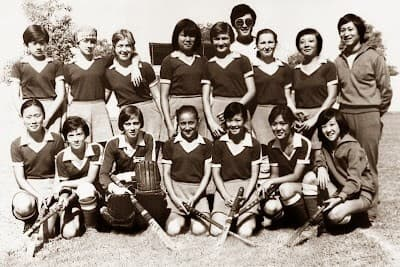
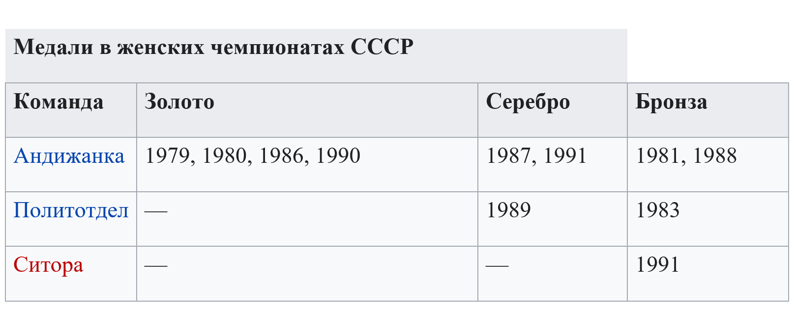
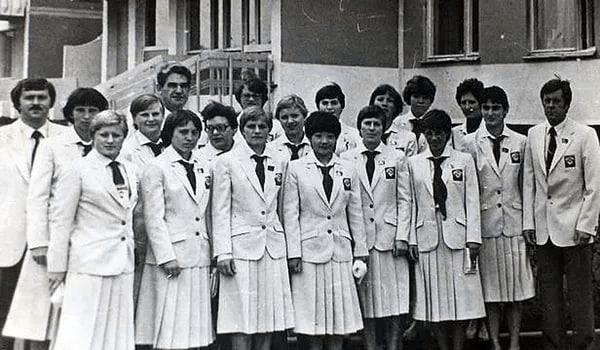
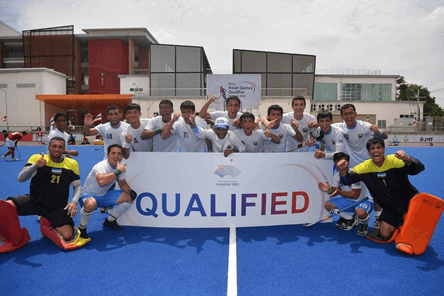
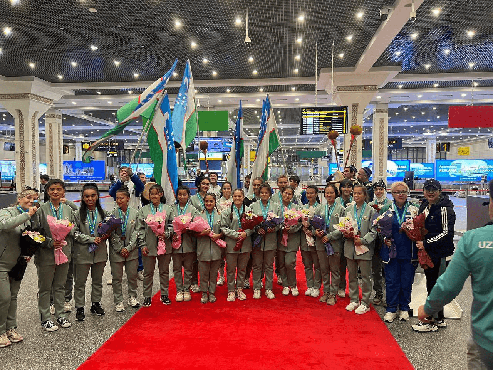

Поскольку Узбекистан из-за жаркого климата не имел возможности для развития хоккея на открытых площадках,
впервые эту игру начали культивировать здесь только в начале 1970-х. В 1970 году в Ташкенте построили
ледовый дворец спорта «Юбилейный», а в 1971 году на его базе была создана команда «Спартак».
В 1972 году Узбекская ССР стала самым южным местом в мире, где развивался хоккей, и была включена в Книгу
рекордов Гиннесса[1].
В 1973 году команда перешла на баланс Главташкентстроя и была переименована в «Бинокор» («Строитель»).
Поскольку в Узбекистане хоккеистов не было, «Бинокор» укомплектовали приезжими игроками, и в том же году
ташкентцы дебютировали в восточной зоне второй лиги первенства СССР. К концу 70-х в команде стало больше
местных воспитанников.
В 1976 году «Бинокор» выиграл зональный турнир и перешёл в первую лигу, где провёл восемь сезонов подряд.
Лучший результат ташкентцы показали в сезоне-1977/1978, когда заняли четвёртое место.
В 1978 году «Бинокор» единственный раз выступил на международном уровне: в чехословацком Таборе он сыграл в
турнире «Золотой колос», где занял третье место.
В 1984 году «Бинокор» вылетел из первой лиги, но с ходу вернулся и играл в первой лиге ещё два сезона. Но в
1987 году «Бинокор» снова покинул первую лигу, а в 1988-м был расформирован.
Юношеская сборная Узбекской ССР участвовала в зимних Спартакиадах народов СССР, но проигрывала все матчи:
так в 1982 году на групповом этапе узбекские хоккеисты потерпели три поражения с общим счётом 4:54 (в том
числе 0:26 от сборной Москвы).

1979 г. "ПОЛИТОТДЕЛ" (Ташкентская область)
Сильный коллектив «Технолог» («Ситора») появился в Бухаре, в Самарканде играл выступавший в первой лиге
«Чевар».
В женских чемпионатах СССР, которые начали разыгрывать с 1979 года, «Андижанка», «Политотдел» и «Ситора»
завоевали четыре золотых, три серебряных и четыре бронзовых медали. Кроме того, «Андижанка» четыре раза
выиграла Кубок СССР.

Высшим достижением узбекистанского клубного хоккея на траве стало 3-е место «Андижанки» в Кубке европейских
чемпионов 1987 года. В 1981 году бронзовые медали чемпионата мира в Буэнос-Айресе выиграли Заздравных,
Горбаткова и Ахмерова.
В 1986 году женская сборная Узбекской ССР выиграла серебряные медали хоккейного турнира летней Спартакиады
народов СССР[2].
Достижения мужского узбекистанского хоккея на траве скромнее, чем у женского, тем не менее команды из Андижана
«Мехнат», «Андижанец» и «Звезда» завоевали одну серебряную (1987) и три бронзовых (1978, 1981—1982) медали
чемпионата СССР.
В Узбекской ССР был широко развит детский и юношеский хоккей на траве, постоянно расширялась сеть спортивных
школ. С середины 70-х в Андижане действовала школа высшего спортивного мастерства, в которой занимались
хоккеисты 11—19 лет, в Ташкенте работала СДЮСШОР по хоккею на траве. Юношеские команды были в Фергане,
Самарканде, Каттакургане, Ленинске, Шахрихане, Маргилане и других населённых пунктах. В 1978 году в первых
республиканских соревнованиях на призы клуба «Травушка» участвовали десятки команд мальчиков и девочек.
В 1980 году в составе сборной СССР стали бронзовыми призёрами на летних Олимпийских играх в Москве. В их
состав вошли из команды «Андижанка» Нелли Горбаткова (1958—1981), Валентина Заздравных (род. 1954), Лейла
Ахмерова (род. 1957) и Алина Хам (род. 1959).

Женская сборная СССР по хоккею на траве участницы Олимпиады-80
Период независимости
После распада Советского Союза ведущие узбекистанские хоккейные клубы прекратили существование, однако вид
спорта не прекратили культивировать. Была создана Федерация хоккея на траве Узбекистана, которая вступила в
Международную федерацию хоккея на траве.
Женская сборная Узбекистана в 1993 году заняла 5-е место на чемпионате Азии. Дважды участвовала в хоккейных
турнирах летних Азиатских игр: в 1994 и 1998 годах стала пятой.
Мужская сборная Узбекистана в 2019 году впервые выступила и заняла 7-е место в Хоккейной серии ФИХ, в которой
играют команды, уступающие по уровню участникам Про Лиги ФИХ.
Обе сборные успешно выступают в индорхоккее на континентальном уровне: мужчины завоевали пять медалей
чемпионата Азии (серебро в 2012 году, бронзу в 2008, 2009, 2010 и 2015 годах), женщин — три бронзовых награды
(2009, 2015, 2019).
Хоккей на траве в Узбекистане развивается, разыгрывается чемпионат страны, в том числе среди юношеских команд,
уделяют внимание совершенствованию материальной базы: в начале 2019 года планировалось построить базы в
Ташкенте, Сурхандарье и Сырдарье, была обустроена база в Бухаре.
В 2020 году Узбекистан должен был принять Кубок Азиатской федерации хоккея на траве среди женщин, однако
турнир отменили из-за пандемии COVID-19.
6-15.05.2022 года в Тайланде городе Банкок прошли отборочные соревнования на путёвку Летних Азиатских игр.
Сборная мужская команда Узбекистана завоевали лицензию на участие в престижном соревновании под названием
«Олимпиада Азии».
Следует отметить студент Узбекского государственного университета физического воспитания и спорта 2 курса
Комилов Джамшид, члена сборной Узбекистана по хоккею на траве будет участвовать на Азиатских играх 2023 года
городе Ханчжоу, Китай.

Сборная мужская команда Узбекистана завоевали лицензию на Азиатские игры-2023
С 9 по 20 октября 2022 г. в городе Талдикоргон Республики Казахстан прошел квалификационный раунд чемпионата
Азии по хоккею на траве среди девушек до 21 года. Наша сборная женская команда Узбекистана заняли 3-е место.
На этих соревнованиях участвовала студентка Узбекского государственного университета физического воспитания и
спорта 1 курса Хайдарова Зулхумор.

Бронзовые призёры чемпионата Азии, Сборная Узбекистана по хоккею на траве среди девушек до 21 года.
2022 году женская сборная Узбекистана Завоевали лицензию на Азиатские игры, соревнования проходили в городе
Джакарте Индонезия.
Женский хоккей на траве был одним из популярных видов спорта в Узбекской ССР: В 1975 году была создана команда
«Андижанка» она была четырёхкратным чемпионом СССР и бронзовым призёром Кубка европейских чемпионов, её
хоккеистки были призёрами летних Олимпийских игр 1980 года и чемпионата мира 1981 года. Медали чемпионата
страны выигрывали из Ташкентской области команда «Политотдел» которая была создана 1979 году и «Ситора» из
Бухары. Сборная Узбекской ССР в 1986 году выиграла серебряные медали летней Спартакиады народов СССР.
После распада Советского Союза была сформирована женская сборная Узбекистана. Её дебютным международным
турниром стал чемпионат Азии 1993 года, проходивший в Хиросиме. На групповом этапе сборная проиграла Китаю
(1:8), сыграла вничью с Японией (0:0) и победила Таиланд (3:0). Став третьей в группе, она не попала в
полуфинал и в стыковом матче за 5-6-е места вновь выиграла у таиландских хоккеисток.
Кроме того, женская сборная Узбекистана участвовала в хоккейных турнирах первых постсоветских летних Азиатских
игр. В 1994 году в Хиросиме в круговом турнире шести команд сборная стала пятой, проиграв Южной Корее (0:4) и
Японии (0:1), сыграв вничью с Китаем (0:0) и Индией (1:1) и победив Сингапур (6:0)[5]. В 1998 году в Бангкоке
в турнире семи команд сборная Узбекистана опять стала пятой: на предварительном этапе она проиграла Японии
(1:2), Китаю (1:4), Индии (1:2) и Южной Корее (0:5), сыграла вничью с Казахстаном (0:0), победила Таиланд, а в
матче за 5-6-е места потерпела поражение от Казахстана (2:5).
В 2016 году узбекистанские хоккеистки впервые выступили в Кубке Азиатской федерации хоккея на траве, где
заняли 7-е место.
В индорхоккее женская сборная Узбекистана трижды выигрывала бронзовые медали чемпионата Азии — в 2009, 2015 и
2019 годах. В 2010 и 2012 годах она заняла 4-е место, в 2017 году — 5-е.
В 2021 году в Узбекском государственном университете физической культуры и спорта на кафедре «Теории и
методики зимних видов спорта» открылось отделение хоккея на траве.